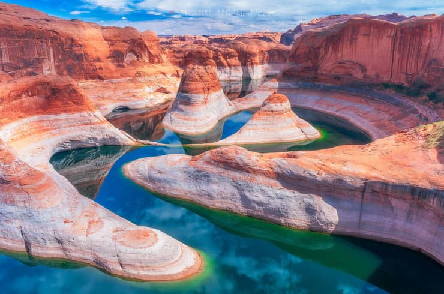

<!DOCTYPE html>
<html>
    <head>
        <meta charset="UTF-8"/>
        <title>Atividade</title>
    </head>
    <body background="design.jpg" bgproperties="fixe" >

    </body>
    <body>
        <center>
            <font face="ELEPHANT" size='7' color='bc8034'>
                5<br/>Lugares</br>que eu gostaria de conhecer
               </font>
           </center>
           <center><font face='VIVALDI' size='5' color='ffba08'>por Raul Furtado</font></center>
           <br/><br/><br/><br/>
       
           <center><font face='PERPETUA TITLING MT' size='6' color='8c7a6b'>Lake Powell, EUA</font></center>
        <center>
        </center>
        <font face='PERPETUA TITLING MT' size='6' color='bc8034'>
            <center><p>BREVE DESCRIÇÃO:<br/></center>
            </p>
            <center>O Lago Powell é um reservatório artificial no rio Colorado, <br/> </center>
            <center> em Utah e Arizona, Estados Unidos.  <br/></center>
            <center> É um importante local de férias <br/></center>
            <center>visitado por aproximadamente dois milhões de pessoas todos os anos.<br/></center>
            
            
            
            <center><a href="quintapag.html">PROXIMO LUGAR!</a></center>
        </font>

       


         
    </body>

</html>